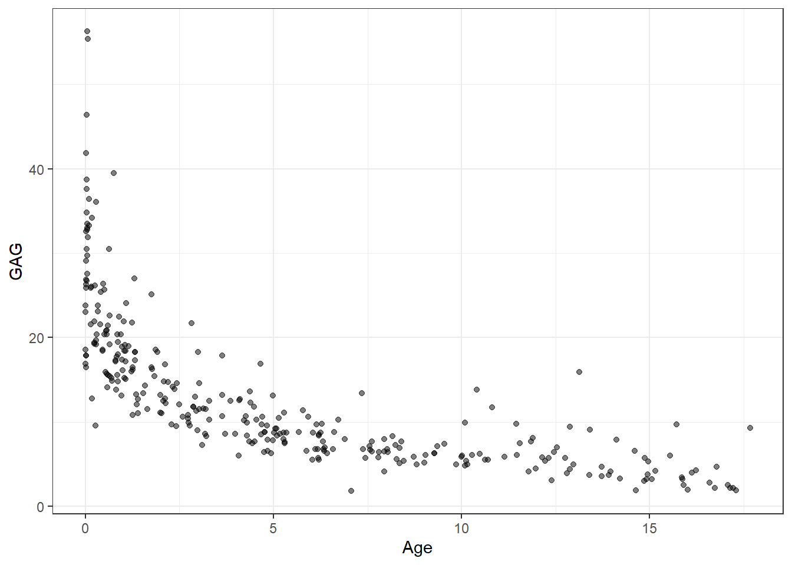
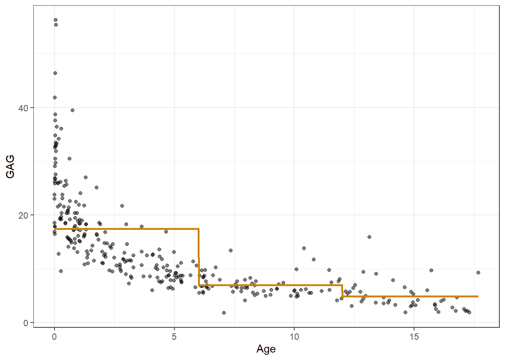
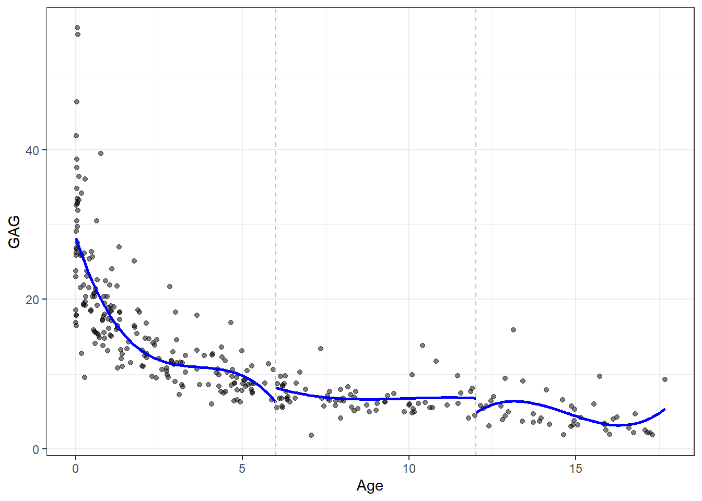
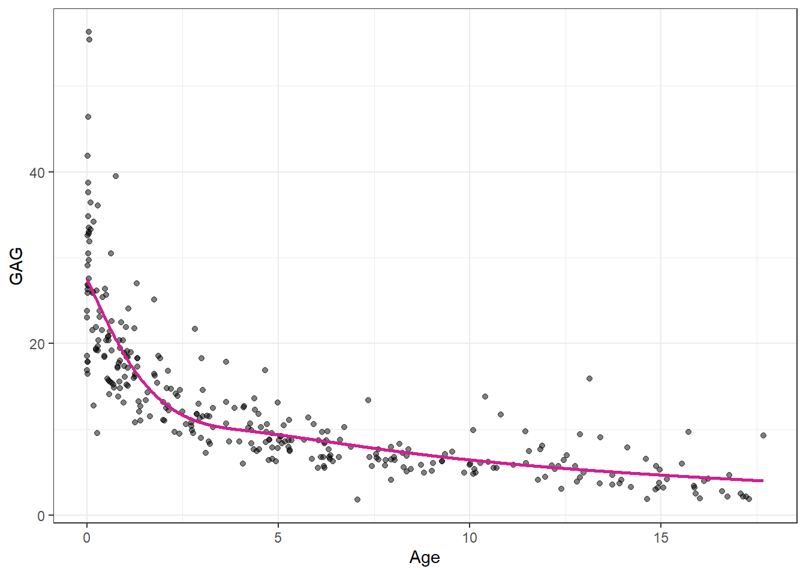
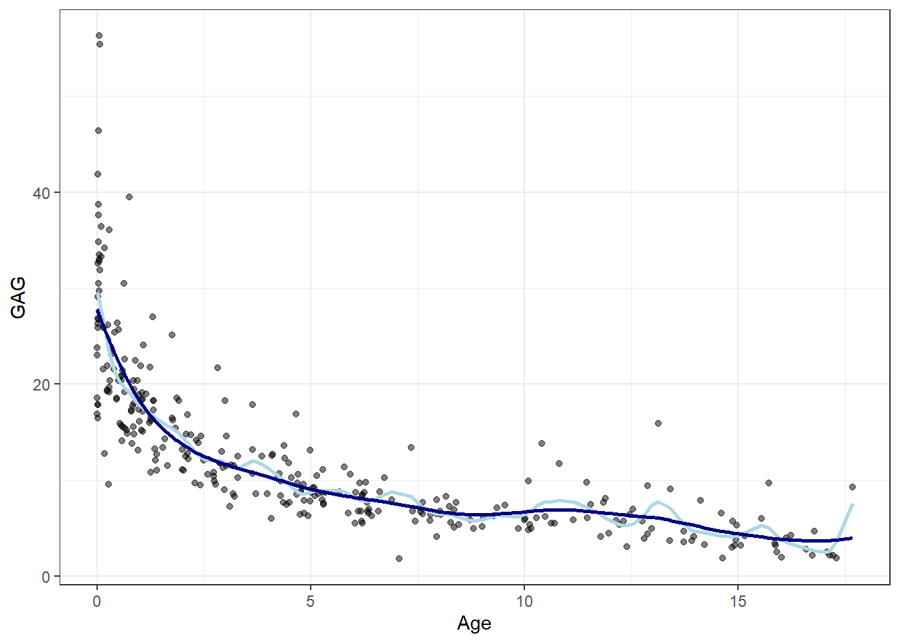
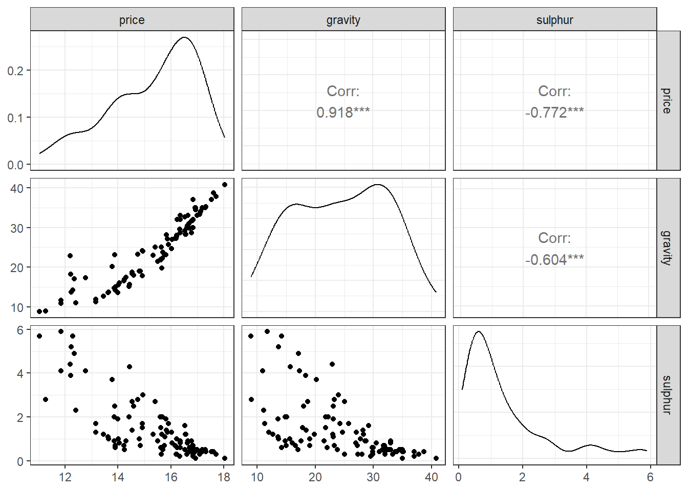
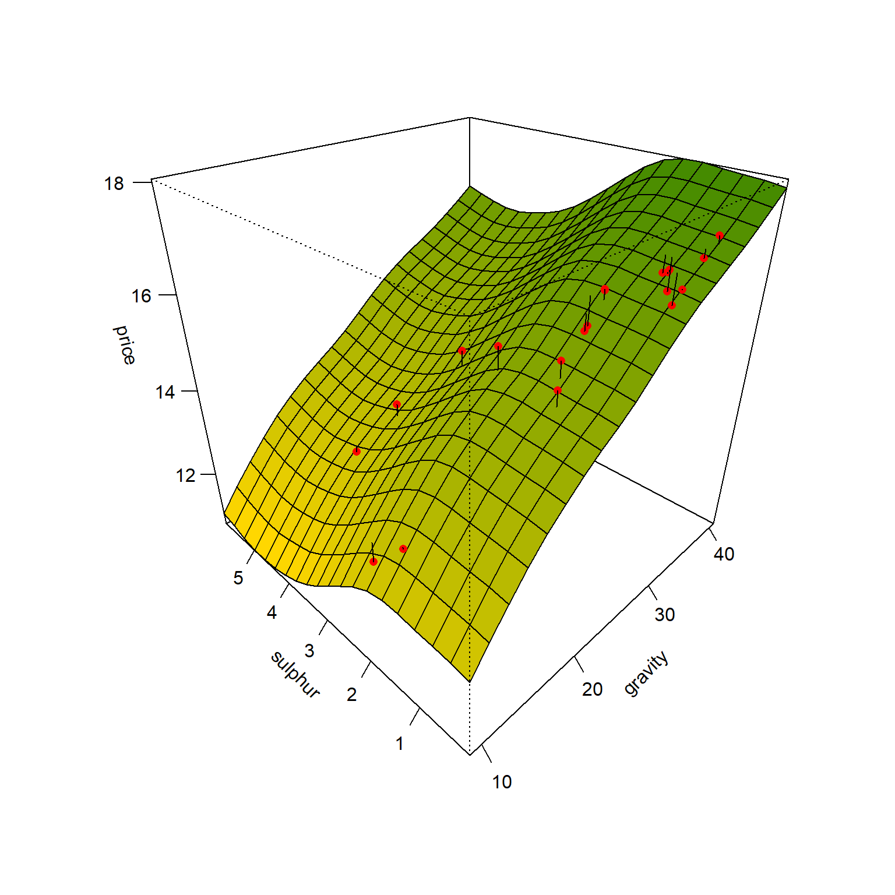

library(MASS)
library(ggplot2)
library(gt)
library(dplyr)
library(splines)
library(AER)
library(gam)
library(modelsummary)
library(GGally)Laboratório 8
Laboratório 8 - Regressão por splines e modelos aditivos generalizados
Modelos de regressão via spline para dados de nível de GAG na urina de crianças
Carregando pacotes.
Dados.
data(GAGurine)
# ?GAGurine
dados <- GAGurine
head(dados) |> gt()| Age | GAG |
|---|---|
| 0.00 | 23.0 |
| 0.00 | 23.8 |
| 0.00 | 16.9 |
| 0.00 | 18.6 |
| 0.01 | 17.9 |
| 0.01 | 25.9 |
Visualização inicial.
pdata <- ggplot(dados, aes(x=Age, y=GAG)) +
geom_point(alpha=0.5) +
theme_bw()
pdata
Separando dados de treino e teste.
set.seed(45)
tr <- round(0.8*nrow(dados))
treino <- sample(nrow(dados), tr, replace = F)
dados.treino <- dados[treino,]
dados.teste <- dados[-treino,]Modelo de regressão via função de passo ou escada (step function), considerando como nós as idades de 6 e 12 anos.
Visualizando o modelo obtido.
x_grid <- seq(min(dados$Age), max(dados$Age), length=1000)
pred_pas <- predict(lm_pas, newdata = data.frame(Age=x_grid))
pred_pas <- data.frame(Age=x_grid,
GAG=pred_pas)pdata + geom_line(data=pred_pas, aes(x=Age,y=GAG),
col = "orange3", lwd=1) 
Polinômios por partes.
lm_l6 <- lm(GAG ~ Age + I(Age^2) + I(Age^3),
dados.treino |> filter(Age<6))
lm_b612 <- lm(GAG ~ Age + I(Age^2) + I(Age^3),
dados.treino |> filter(Age>=6 & Age<12))
lm_g12 <- lm(GAG ~ Age + I(Age^2) + I(Age^3),
dados.treino |> filter(Age>=12))Visualizando modelo.
x_grid_l6 <- seq(min(dados$Age),6, length=50)
pred_l6 <- predict(lm_l6, newdata = data.frame(Age=x_grid_l6))
pred_l6 <- data.frame(Age=x_grid_l6,
GAG=pred_l6)
x_grid_b612 <- seq(6,12, length=50)
pred_b612 <- predict(lm_b612, newdata = data.frame(Age=x_grid_b612))
pred_b612 <- data.frame(Age=x_grid_b612,
GAG=pred_b612)
x_grid_g12 <- seq(12, max(dados$Age), length=50)
pred_g12 <- predict(lm_g12, newdata = data.frame(Age=x_grid_g12))
pred_g12 <- data.frame(Age=x_grid_g12,
GAG=pred_g12)pdata + geom_line(data=pred_l6, aes(x=Age,y=GAG),
col = "blue", lwd=1) +
geom_line(data=pred_b612, aes(x=Age,y=GAG),
col = "blue", lwd=1) +
geom_line(data=pred_g12, aes(x=Age,y=GAG),
col = "blue", lwd=1) +
geom_vline(xintercept = c(6,12), lty=2,col="grey")
Spline natural cúbica.
knots <- quantile(dados$Age)[2:4]
lm_cub_ <- lm(GAG ~ Age + I((Age-knots[1])^3*(Age>=knots[1])) +
I((Age-knots[2])^3*(Age >= knots[2])) +
I((Age-knots[3])^3*(Age >= knots[3])),
dados.treino)Visualizando modelo.
pred_cub_ <- predict(lm_cub_, newdata = data.frame(Age=x_grid))
pred_cub_ <- data.frame(Age=x_grid,
GAG=pred_cub_)pdata + geom_line(data=pred_cub_, aes(x=Age,y=GAG),
col = "violetred", lwd=1)O modelo de spline natural é mais complexo que o realizado anteriormente, uma vez que considera as derivadas de primeira ordem seja constante e a de segunda ordem seja nula nos nós extremos. Recomenda-se usar a função ns do pacote splines para obtenção do modelo.
ns1 <- lm(GAG ~ ns(Age, knots = knots), data = dados.treino)Visualizando modelo.
ns_ <- predict(ns1, newdata = data.frame(Age=x_grid))
pred_ns <- data.frame(Age=x_grid,
GAG=ns_)pdata +
geom_line(data=pred_ns, aes(x=Age,y=GAG),
col = "violetred", lwd=1)
Suavização de splines é uma boa escolha uma vez que seleciona o número ideal de nós (ou graus de liberdade) por grid search e validação cruzada.
ssp1 <- smooth.spline(dados.treino$Age,
dados.treino$GAG,
df=30)
ssp2 <- smooth.spline(dados.treino$Age,
dados.treino$GAG,
cv=T) ### cv = T faz validacao cruzada via LOOWarning in smooth.spline(dados.treino$Age, dados.treino$GAG, cv = T):
cross-validation with non-unique 'x' values seems doubtfulssp2$df[1] 9.970455pred_df30 <- predict(ssp1)
pred_df30 <- data.frame(Age=pred_df30$x,
GAG=pred_df30$y)
pred_smoo <- predict(ssp2)
pred_smoo <- data.frame(Age=pred_smoo$x,
GAG=pred_smoo$y)pdata +
geom_line(data=pred_df30, aes(x=Age,y=GAG),
col = "lightblue", lwd=1) +
geom_line(data=pred_smoo, aes(x=Age,y=GAG),
col = "navy", lwd=1)
Modelos generalizados aditivos para preço médio do barril de petróleo
Carregando dados.
data(USCrudes)
# ?USCrudes
dados <- USCrudesVisualizando dados.
glimpse(dados)Rows: 99
Columns: 3
$ price <dbl> 13.86, 16.82, 13.65, 16.53, 15.66, 16.16, 18.05, 14.93, 16.57,…
$ gravity <dbl> 14.8, 31.7, 13.7, 29.2, 19.8, 27.2, 40.8, 24.2, 28.3, 32.6, 16…
$ sulphur <dbl> 2.0, 0.7, 1.0, 1.6, 1.2, 0.7, 0.1, 1.7, 1.2, 0.5, 0.7, 4.3, 0.…datasummary_skim(dados)| Unique | Missing Pct. | Mean | SD | Min | Median | Max | Histogram | |
|---|---|---|---|---|---|---|---|---|
| price | 90 | 0 | 15.3 | 1.7 | 11.0 | 15.8 | 18.0 |  |
| gravity | 78 | 0 | 24.4 | 8.1 | 8.9 | 24.2 | 40.8 |  |
| sulphur | 33 | 0 | 1.4 | 1.4 | 0.1 | 0.9 | 5.9 |  |
ggpairs(dados) + theme_bw()Warning in geom_point(): All aesthetics have length 1, but the data has 9 rows.
ℹ Please consider using `annotate()` or provide this layer with data containing
a single row.
set.seed(11)
tr <- round(0.8*nrow(dados))
treino <- sample(nrow(dados), tr, replace = F)Modelo generalizado aditivo.
gam1 <- gam(price~s(gravity) + s(sulphur), family = gaussian, dados[treino,])O modelo é suavizado e os graus de liberdade para cada variável considerada podem ser obtidos.
gam1$nl.dfs(gravity) s(sulphur)
3.000265 3.000068 Gráficos para observar os efeitos individuais.
par(mfrow = c(1,2))
plot(gam1, se=TRUE, col ="red", lwd = 2)
Visualizando modelo GAM obtido.
xs <- seq(min(dados$gravity), max(dados$gravity), length = 20)
ys <- seq(min(dados$sulphur), max(dados$sulphur), length = 20)
xys <- expand.grid(xs,ys)
colnames(xys) <- c("gravity", "sulphur")
zs <- matrix(predict(gam1, xys), nrow = length(xs))
n.cols <- 100
palette <- colorRampPalette(c("gold", "chartreuse4"))(n.cols)
zfacet <- zs[-1, -1] + zs[-1, -20] + zs[-20, -1] + zs[-20, -20]
facetcol <- cut(zfacet, n.cols)
par(mfrow = c(1,1))
p1 <- persp(x=xs, y=ys, z=zs, theta=-45, phi=30, ticktype='detailed',
xlab="gravity", ylab="sulphur", zlab="price", col = palette[facetcol])
obs <- with(dados[-treino,], trans3d(gravity,sulphur,price,p1))
pred <- with(dados[-treino,], trans3d(gravity,sulphur,predict(gam1,newdata = dados[-treino,]), p1))
points(obs, col = "red", pch = 16)
segments(obs$x, obs$y, pred$x, pred$y)O desempenho dos modelos não foi calculado para os dados de teste. Sugere-se fazê-lo de forma similar ao realizado nos capítulos anteriores.